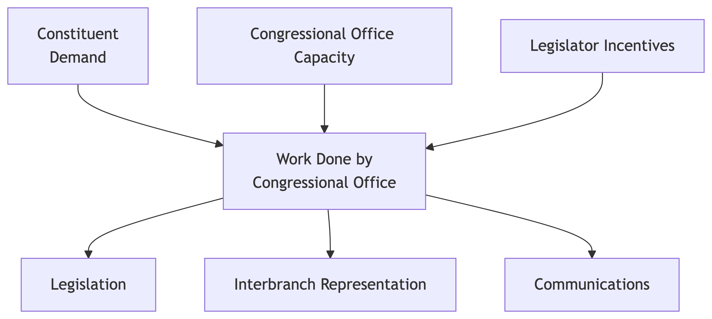

2 Theories of Interbranch Representation
ABSTRACT: Why do some legislators do more interbranch representation than others? Political science research posits many possible explanations, some pointing in different directions. We unify and extend prior scholarship into a three-part framework of possible drivers of interbranch representation: (1) constituent demand, (2) capacity, and (3) strategic incentives.
This book takes up two related questions, the answers to which shape how we think about interbranch representation. First, are the activities of legislative offices that we call interbranch representation a basket of factors that belong together conceptually and move together empirically? More simply, is interbranch representation something to be discussed in terms of “more” or “less”? Or is it better to think of styles of interbranch representation like Fenno’s Home Style: House Members in their Districts — where the primary variation is in what kind of representation one prioritizes (Fenno 1978)? Second, if some members are doing much more interbranch representation than others (they are), why? Do different kinds of interbranch representation have different causes?
Existing political science theory has much to say about both questions. Several existing theories suggest that we should think of interbranch representation, in general, as “work” that some choose to do and others do not. For example, dividing legislators into “work horses” and “show horses” suggests that legislators tend to follow a type, in which some legislators focus on legislative and representational substance and others focus on “style” through communications and media attention (Payne 1980).1 We would expect one type to prioritize interbranch representation and the other to prioritize communications.
Other theories suggest that priorities and how they show up in legislators’ work are more important. Fenno (1978) suggests that members of Congress shift from prioritizing constituency service to policy work as their career in Washington progresses — some prioritize constituency service, and others prioritize policy work. In a world of limited resources, perhaps we should not expect everyone to do everything. And different people may opt to represent their constituents in different ways. This theory of Fenno’s also provides one answer to the second question about the causes of variation — the longer one serves in Congress and the more deeply embedded they are in Washington, DC, the more they prioritize Washington work over district service.
In this chapter, we elaborate on our three-part framework of possible explanations for variation in interbranch representation: demand, capacity, and strategy. As we describe below, some explanations touch on more than one part of this framework. For example, a representative may seek to join the House Committee on Appropriations’ Subcommittee on Agriculture, Rural Development, Food and Drug Administration, and Related Agencies because they represent farmers and feel pressure from them to get more involved in shaping grant criteria and farm subsidies (demand), or because the representative thinks it is a smart way to shape farm policy or get reelected (strategic behavior). Joining a committee may also give legislators better access to the committee staff who conduct oversight of appropriations, and being on the committee may make some agencies take legislators’ requests more seriously (two forms of increased capacity to shape the workings of government). Indeed, some agencies, including the Food and Drug Administration, meticulously document which committees every legislator who contacts the agency sits on, even for requests unrelated to committee work. Thus, a member of an Agriculture Subcommittee may make more requests to food and agriculture agencies. They face active constituent demand, because their institutional position on the committee increases their capacity to make requests, and because they have made strategic choices about what kinds of policy to focus on given the political environment they are facing. And committee membership is just one potential cause of variation.
To further contextualize our theoretical expectations and our broader inquiry into interbranch work, we map existing theories onto our concept of interbranch representation. Some of these existing theories have implications for interbranch representation as a whole. However, most focus on only one of its component parts, and very few talk about engaging with the executive branch as a form of representation. Political scientists often try to characterize legislators as providing more or less representation or different styles of representation. Depending on how we think about interbranch representation, we may expect the drivers of variation to be fairly consistent or vary depending on whether we are looking at activities representing individuals, work on behalf of nonprofits and businesses, or policy work.
The concept of interbranch representation that we advance in this project unifies constituency service, oversight, and other behaviors within a broader conceptual and empirical framework. To bring these concepts together, we conceptualize all interactions with the bureaucracy as a decision to allocate effort (staff and time) to different priorities representing different constituencies, constrained by capacity. This framework offers a way to study this form of representation systematically as a function of one’s constituencies, capacity, and priorities. By forging this new concept of interbranch representation by threading disparate literatures together, we can begin to gain a fuller, richer picture of what it is that Congress does.
2.1 A More Expansive View of Representation
Representation is most often studied as the congruence between legislators’ roll-call votes and constituents’ policy preferences (e.g., Miller and Stokes 1963; Clinton 2006; Ansolabehere and Jones 2010), with congruence constituting normatively “good” representation and suggesting that legislators are responsive to their constituents’ preferences. Studies of other forms of representation also assess congruence between constituents and legislators. Work on descriptive representation has assessed responsiveness on the basis of key identities (e.g., Bowen and Clark 2014; Canon 1999), including responsiveness through interbranch representation (Lowande et al. 2019). Scholarship on representation and inequality has found that legislators are more responsive to donors (Gilens 2012) and less responsive to less influential constituency groups (Miler 2010) and the poor (Miler 2018). For these commonly studied forms of representation, public voting records make it possible for scholars to measure congruence or responsiveness.
Over the last few decades, scholars have begun to evaluate other forms of representation, ranging from legislators’ speech (Grimmer 2013; Grimmer et al. 2014) to legislative effectiveness as a measure of the “quality of representation” (Volden and Wiseman 2014; Casas et al. 2019). Constituency service, on the other hand, has been studied primarily as a means for legislators to win reelection (Fiorina 1977). In this view, legislators’ responsiveness to constituent requests is not a form of representation but an electoral activity that also serves legislators. Only recently has quantitative scholarship begun to view constituency service as a form of representation (Snyder 2024; Blackwood 2026; Blackwood et al. 2026). A large number of field experiments have uncovered distortions in legislators’ responsiveness to constituents for the sharing of policy opinions (Butler and Dynes 2016; Henderson et al. 2023), requests for meetings with legislators (Kalla and Broockman 2016), and requests for constituency service (Butler and Broockman 2011; Dropp and Peskowitz 2012; Lajevardi 2020; Garcia and Sadhwani 2023). Most of these studies, however, have been conducted on state legislators, and their results may not be generalizable to members of Congress. Moreover, writing back to a constituent may not be the same as taking more substantive actions, such as intervening with a federal agency, on their behalf.
We build on and complement the vast literature on representation and responsiveness by documenting and explaining variation in interbranch representation, broadly construed, across all members of Congress, across all federal agencies, and across all forms of interbranch representation. Next, we break down our concept of interbranch representation into its two key features—its interbranch function and its role in representation—and explain how each of these features influences our theory about variation in interbranch representation.
2.2 Interbranch Activities
Activities involving interactions between branches of government are a necessary part of the American constitutional system of checks and balances. The shared lawmaking, war, appointment, and treaty powers of Congress and the president are the hallmarks of a system that Richard Neustadt (1991) described as “separated institutions sharing powers.” Scholarship on the relationship between Congress and the president and Congress and the bureaucracy has long explored the tensions that arise from such a system. These tensions are most apparent in activities such as congressional oversight of the bureaucracy, congressional delegation of policymaking authority, appropriations, and, to a lesser extent, constituency service. The wealth of existing research on these interbranch activities has largely considered each of them separately; our concept of interbranch representation, on the other hand, examines these activities together, as they occur at least in part through Congress’s contacts with the bureaucracy.
In recent decades, scholarship on the interaction between the legislative and executive branches has revolved around the concepts of strategic delegation of policymaking authority and appropriation of funds on the front end (Arnold 1979; Epstein and O’Halloran 1999; Kiewiet and McCubbins 1991) and oversight on the back end (McCubbins and Schwartz 1984; Lee 2013). As a concept, delegation focuses attention on principal-agent dynamics. Oversight scholarship also focuses on principal-agent relationships, with some recent work on descriptive representation (Minta 2011). Congressional oversight hearings can serve strategic political functions for members of Congress by giving them the opportunity to grandstand (Park 2021), and research suggests that such grandstanding pays electoral dividends for legislators (Park 2023). However, oversight is also partisan, with legislators less likely to investigate presidents of their own party (Lee 2013).
Interbranch representation is not about acts of delegation and appropriation, but there are parallels and overlaps. Delegation and appropriation occur through voting, and scholars have uncovered significant inequalities in who is represented in legislative voting (Bartels 2008; Carnes 2016; Gilens 2012). Studies of delegation of policymaking authority focus on asymmetric incentives and information across institutions (Epstein and O’Halloran 1999; Fiorina 1982; McCubbins and Schwartz 1984). Interbranch representation is often aimed at improving legislator information and attempting to shape policy post-delegation in ways that were not possible within the legislative process (Ritchie 2018, 2023). Other classic studies of the relationship between members of Congress and federal agencies focus on appropriations (Arnold 1979; Kiewiet and McCubbins 1991), including presidential pork (Berry et al. 2010) and earmarking. Whereas earmarks are (in theory) a feature of annual appropriations legislation, a parallel dynamic of members of Congress making requests for their districts occurs on a daily basis through interbranch representation. Indeed, when legislative earmarks were banned, legislators likely turned to interbranch representation activities, such as “lettermarking” (Mills and Kalaf-Hughes 2015).
Members of Congress exert influence over bureaucratic policymaking and administration in many other ways. MacDonald (2013) shows that limitation riders in appropriations legislation have allowed Congress to influence rules in the bureaucracy even as the power of the administrative state has expanded. Ritchie (2023) demonstrates how members of Congress can circumvent obstacles in the legislative process by writing directly to federal agencies and pressuring them to change policy through the rulemaking process — a process Ritchie terms “backdoor lawmaking.” Such efforts could also be read as attempts by legislators to circumvent the principal-agent problem and influence rulemaking more directly.
Legislators also interact with the federal bureaucracy through constituency service, despite most previous research having cast constituency service primarily as an activity that helps members of Congress electorally (e.g., Cain et al. 1987; Fiorina 1977). Members of Congress—or, more precisely, their staff—contact federal agencies on behalf of their constituents to help resolve individual bureaucratic issues that constituents have brought to their attention. Through this process of hearing from constituents, congressional offices may become aware of broader problems plaguing the bureaucracy, allowing constituency service to function as a form of oversight.
While interbranch representation encompasses many forms of oversight, it is broader than activities traditionally considered oversight (e.g., hearings, investigations, or sanctions). A small share of congressional interactions with bureaucrats concerns issues that rise to the level of hearings and investigations. The vast majority are interventions in the agency’s day-to-day operations (see, e.g., Lowande 2018; Lowande and Potter 2019). Agencies are constantly engaged in maintaining their political coalitions and reputations (Carpenter 2001, 2014), by, for example, tagging all incoming requests from members of Congress as “VIP” and implementing protocols for rapid responses. An interbranch representation perspective broadens the concept of oversight to encompass not only occasional hearings and oversight reports prompted by crises and scandals but also daily requests for information and comments on implementation.
Beyond broadening the concept of oversight, the nature of our data means that we are examining several different kinds of interbranch activities, including constituency service and policy work related to oversight or appropriations, simultaneously. Most other studies of interbranch activities2 have examined only one type of interbranch activity at a time. Placing multiple interbranch activities under one umbrella for analysis has implications for our theory and for our characterization of the interbranch component of interbranch representation. Because our concept of interbranch representation encompasses both oversight and constituency service, it cannot be characterized solely as either adversarial or cooperative behavior. As such, it is difficult to make normative claims about the volume of interbranch representation and what that volume says about relations between the legislative and executive branches. However, as we describe at greater length in the following section, interbranch representation is one way in which Congress functions to fulfill its constitutional responsibilities.
2.3 Interbranch Work as Representation
Beyond helping Congress achieve its goals of conducting oversight of the executive branch, interbranch activities can also function as a form of representation. Hanna Pitkin’s (1967, 209) canonical definition of “representation” as legislators’ “acting in the interest of the represented, in a manner responsive to them” can help to illuminate the specific representational dimension of interbranch representation. Building on Pitkin (1967), Eulau and Karps (1977) define representation as being comprised of four components: policy responsiveness, service responsiveness, allocation responsiveness (appropriations, administrative interventions, and pork-barrel projects), and symbolic responsiveness. While most of the literature focuses on policy responsiveness, our interest in this project is a combination of service responsiveness, allocation responsiveness (administrative interventions), and policy responsiveness.
Constituency service is a direct form of responsiveness, as congressional offices contact the federal bureaucracy in response to their constituents’ requests for help. Johannes (1984) describes casework as the “function of Congress as intermediary between the government and the governed — between citizens and the bureaucracy” (Johannes 1984, pg. 3). In addition to this literal responsiveness, constituency service can also function as a vehicle for descriptive representation (Lowande et al. 2019) and a way for constituents to feel heard by their government (Snyder 2024). And although, as legislators caution their constituents, they may not be able to achieve a favorable resolution to their constituents’ problems, the act of attempting to resolve these issues is clearly a way in which congressional offices act in their constituents’ interests.
Constituency service is one of the oldest forms of representation, dating back to the earliest congresses when constituents sought assistance with Revolutionary War pensions (Eckman 2025). It has been discussed as an important form of representation in canonical studies of Congress (Fenno 1978) — and members of Congress themselves at least used to agree. A 1977 survey of House Members found that 58% said that casework was “Very Important”, an additional 26% said “Somewhat Important,” and just 14% said “Slightly or Not Very Important” (Johannes 1984, pg. 10).
Yet constituency service remains one of the least understood congressional activities. Cain et al. (1987) began their landmark book The Personal Vote: Constituency Service and Electoral Independence by lamenting the lack of attention to constituency service in the empirical literature. That began to change in the 1980s with both Cain et al. (1987)’s survey of legislators, legislative staff, and constituents, and Johannes (1984)’s surveys of legislators, legislative staff, and federal agency staff. Their survey data, which are now more than 40 years old, produced much of what we know today about constituency service.
Scholars have typically understood normatively “good” representation to consist of an alignment between legislators’ actions and constituents’ interests. The early but comprehensive study of “policy congruence” between legislators and constituents by Miller and Stokes (1963) has spawned a robust literature on policy representation. Despite the difficulties inherent in measuring constituents’ preferences at the congressional district level, Clinton (2006) examines dyadic policy representation and finds little evidence that legislators are consistently responsive to constituents’ preferences in their roll-call votes. At the level of collective representation, Ansolabehere and Kuriwaki (2026) show that Congress often fails to pass legislation that a majority of the public supports. A number of other studies (e.g., Bartels 2008; Miler 2010, 2018) have found that legislators represent the policy interests of the wealthy and powerful over those of ordinary constituents, raising concerns about distortions in substantive representation.
While scholars and observers generally agree on the definition of normatively good substantive representation, it is less obvious what normatively good constituency service work would look like for members of Congress. In writing a report for the Congressional Research Service in 1968, Walter Kravitz wrote, “Casework has generated considerable controversy among Members of Congress for many years. That controversy involves not only the merits of the practice but also the facts about its nature and extent. Reliable and comprehensive factual information is in short supply,” (Kravitz 1972). Recently, field experiments and audit studies (e.g. Butler and Broockman 2011; Mendez and Grose 2018; Lajevardi 2020; Garcia and Sadhwani 2023) have identified patterns of discriminatory responsiveness to constituent communications, primarily among state legislators. However, it remains the case that legislators perform (and claim credit for) vastly different amounts of constituent casework, which suggests that responsiveness to existing levels of constituent demand is a primary criterion by which constituency service work should be judged.
Constituency service’s function as a form of oversight also raises questions about the normative dimensions of interbranch representation. If legislators are contacting the bureaucracy primarily to address problems that their constituents are experiencing, then more interbranch representation may not necessarily be desirable. However, there are two reasons why a greater volume of interbranch representation may not be normatively concerning. First, given the role that we expect legislator capacity to play in explaining variation in interbranch representation, more contacts with the bureaucracy may be more indicative of this capacity than of any problems with the bureaucracy per se. Second, and relatedly, legislators may be engaging in these contacts for strategic purposes, which would also minimize the role of bureaucratic issues in driving variation in interbranch representation. Below, we describe our theoretical framework of demand, capacity, and strategic choices and further discuss how each of these factors may illuminate additional normative concerns.
2.4 A Unified Framework: Demand, Capacity, and Strategic Choices
We introduce a framework of Demand, Capacity, and Strategic Choices to explain the interbranch representation a member’s office produces. While our focus here is on interbranch representation, this framework can help us understand work done by congressional offices more broadly. Our framework simultaneously extends and unifies existing theoretical ideas from disparate strands of scholarship on Congress and the bureaucracy, and also introduces new hypotheses not previously suggested.
We define Demand as the constituent-driven influences on a congressional office. We define Capacity as the ability of a legislator’s office to produce work. We define Political Environment as the partisan, electoral, and institutional conditions a member faces in a given year. We define Strategic Choices as decisions legislators make about what to prioritize and how to allocate their time and resources. Importantly, these elements and the explanations that follow from them understand legislators and their offices differently. Demand- and Capacity-related explanations focus on legislative offices as bureaucracies, while Strategic Choices focus on legislators as politicians.
Figure 2.1 illustrates how the parts of our framework come together to explain work done by congressional offices. It highlights some of the important components (sub-units) within each part of the framework. Looking at Figure 2.1 from top to bottom, we see the political environment shaping the strategic choices legislators make, as well as office capacity influencing both a member’s staff allocation choice and the work done by congressional offices. Members’ strategic choices, constituent demand, and capacity all shape the work that is done by congressional offices (output). The work done by congressional offices encompasses three different types of outputs: legislation, interbranch representation, and communications.
In the following sections, we elaborate on each of these elements of our framework.
Demand
In any democratic system, the needs and preferences of a legislator’s constituents are at least supposed to play a role in the work done by a legislator’s office. While a large literature exists examining whether and how constituents’ policy preferences impact legislators’ voting behavior (Miller and Stokes 1963; Achen and Bartels 2016), less is known about how constituent demand relates to the provision of interbranch representation. Of all work done by congressional offices, one might imagine that interbranch representation, in which a large portion of the work is helping individual constituents navigate specific problems they have encountered with some branch of the federal bureaucracy, might be most closely tied to constituent demand.
Surveys estimate 8-23 percent of constituents contact a congressional office in a given year (Moses et al. 2025). One of the central elements of interbranch representation—constituency service—is often assumed to be a core institutional function of congressional offices, as evidenced by the fact that district office staff continue to provide constituency service even when the congressional office is vacant due to the death or resignation of the legislator. This dynamic suggests that constituency service is an activity aptly described by the “logic of appropriateness” that characterizes bureaucracies (March and Olsen 1989). Extending this idea to the realm of interbranch representation, legislators and their staff provide service to constituents simply because it is understood to be a key part of their representational responsibilities. Staff in particular understand their job to be responding to all constituent requests. The amount of demand a district places on its senator or representative may depend on the number of constituents in the district, how well the constituents are able to advocate for their interests, and how much need for government help constituents experience.
Unfortunately, most of the time we cannot observe constituent demand in the form of the number of requests for help member offices receive directly. Congressional offices typically do not release data on the number of requests for help they receive.
One notable exception in which this data was collected gives us a brief glimpse into the world of constituent demand. In 1976, the House created a Commission on Administrative Review (HR 1368) to conduct “a comprehensive study of the administrative system” (Commission on Administrative Review 1977, pg 1).3 To lay the groundwork for their recommendations, the commission undertook a rigorous data collection process that included (among many other things) gathering data from congressional offices about their constituency service caseload. If we assume that all member offices recorded constituent requests for help, which is certainly not a given, this number would roughly approximate actual constituent demand (requests received).4 Thankfully for the advancement of scholarly research on congressional offices, the committee was remarkably transparent and forward-thinking in not only releasing their results, but including a detailed methodological report (Commission on Administrative Review 1977) and providing full replication data that future scholars could, and did, take advantage of to conduct additional analyses (Yiannakis 1981; Johannes 1984; Maass 1983).
Hypothesis 1 (Demand). Legislators with more constituent demand will do more interbranch representation.
Why Constituent Demand is Insufficient to Explain Interbranch Representation
Constituent demands drive interbranch representation to an extent, but apolitical descriptions of constituency service overstate its role. We show variation in interbranch work that cannot be explained by variation in demand. Moreover, some legislators strategically allocate staff time to soliciting requests for help from their constituents, making some representation that results from constituent demands best understood as legislator-driven.
An extreme interpretation of the importance of constituent demand is one of the myths we aim to dispel in writing this book: that interbranch representation is simply a function of constituent demand. We call this view the “folk theory of constituency service.” By this folk theory, legislators simply respond to their constituents; there are no constraints imposed by the office’s capacity limits, and congressional offices are making no choices about whom to help or what to prioritize. Rather, they receive a request for help, and they reach out to a federal agency to help the constituent.
While we do not directly observe the requests for help legislators receive from constituents and thus cannot directly compare the requests for help to the interbranch representation provided, a brief examination of interbranch representation provided by US senators who represent vastly different numbers of constituents renders this purely demand-driven explanation unlikely. It is hard to imagine, for example, that the mere 1.8 million West Virginians asked for more help from Senator Robert Byrd than the 29 million Texans did from Senator Ted Cruz, which would be necessary to believe a folk theory explanation of why Senator Byrd provided so much more interbranch representation to his constituents than did Senator Cruz (United States Census Bureau 2026). While constituent demand appears insufficient to explain variation in interbranch representation, we believe it still plays an important role in the production of interbranch representation.
Existing research, however, suggests that such a view of legislative behavior as non-strategic or unconstrained is inadequate. As discussed above, political scientists have long understood legislators’ behavior, including their provision of constituency service, to be strategic, particularly when it comes to helping legislators achieve reelection (e.g., Mayhew 1974; Cain et al. 1987; Fiorina 1977; Fenno 1973). Other research dating from the 1970s and 1980s has largely supported this claim (Serra and Cover 1992; Serra and Moon 1994), and more recent work suggests that legislators behave as though constituency service has electoral benefits (Dropp and Peskowitz 2012), just as senators tailor their communications based on their electoral concerns (Grimmer 2013). Furthermore, field experiments demonstrate uneven responses that different constituents receive from state legislative offices in the United States on the basis of constituent race (Butler and Broockman 2011), from Members of Parliament in the United Kingdom on the basis of constituent ethnicity and occupation (Habel and Birch 2019), and from local politicians in South Africa on the basis of race (McClendon 2016). We therefore expect that legislators’ interbranch representation activities will vary according to their motivations. For example, electoral security may matter, with less electorally secure legislators engaging in more contact with the bureaucracy. In the sections that follow, we detail the two other components of our theory—capacity and strategic incentives—that move beyond a simple demand-based explanation for interbranch representation.
2.5 Capacity
We turn next to the capacity component of our theory. We define Capacity as the ability of a legislator’s office to produce work. If congressional offices are capacity-constrained, the amount of interbranch representation that they engage in should vary with the capacity of the legislator’s office. Formal theory voter screening models predict that as a legislator’s capacity increases, they will increase their level of constituency service (Ashworth and Bueno de Mesquita 2006). Empirical research suggests low congressional capacity serves as a major constraint on Congress’s work (LaPira et al. 2020; Reynolds 2020; Bolton and Thrower 2016, 2022). Empirical research also shows that legislator capacity impacts backchannel (backdoor) policymaking—when legislators contact executive agencies attempting to influence policy (Ritchie 2018, 2023). Increases in congressional capacity can offset shifts in legislator priorities between policymaking and constituency service (Judge-Lord et al. 2026).
Although most legislative politics scholarship focuses on the work that legislators do, recently scholars have brought renewed attention to the legislative office as a whole, and to legislative staff in particular (Bolton and Thrower 2022; Crosson and Kaslovsky 2025; Crosson et al. 2020, 2021). Congressional staff are central to the activities that constitute interbranch representation. Staff play crucial yet underappreciated roles in most functions of Congress (e.g. Hertel-Fernandez et al. 2019; Montgomery and Nyhan 2017; Crosson et al. 2020), including constituent-facing functions like constituency service (Grose et al. 2007; Landgrave and Weller 2020). Thus, our theory focuses as much on the capacity and other characteristics of the congressional office as it does on the decisions and characteristics of legislators.
As explained above, congressional offices’ constituency service work can be conceived of as following a “logic of appropriateness” (March and Olsen 1989) in which congressional staffers respond to all constituent requests because they understand this work to be a key part of their job. Responses to constituent requests, however, can take many different forms. Savvy, experienced, or well-connected congressional staffers may be more capable of obtaining an answer from the bureaucracy or otherwise helping a constituent resolve their issue — not unlike how bureaucrats use their expertise to implement policy. Furthermore, with constituent requests sometimes blurring the line between casework and policy-related matters (Snyder 2024), congressional staff may need specialized knowledge to determine what does and does not warrant reaching out to a federal agency. Thus, while staffers’ initial responses to constituent requests (which may not involve contacting the bureaucracy) could be driven largely by demand, the work that staffers do to contact the bureaucracy as part of interbranch representation is likely to depend on the capacity of the office.
Hypothesis 2 (Capacity). Congressional offices with more capacity will do more interbranch representation.
2.6 Strategic Incentives
We define strategic incentives as the features of the political environment that shape what legislators choose to prioritize and how they allocate their time and resources. While legislators may be constrained or stifled in their efforts to advance their priorities legislatively — either by the realities of chamber majorities or by pressure from party leaders —individual members have near-full autonomy over how they (and their office) engage in interbranch representation. This distinction makes interbranch representation, unlike legislative work, an opportunity to gain clearer insights into legislators’ strategic choices. While increased constituent demand and expansions of office capacity largely push in the same direction — toward more interbranch representation — strategic incentives can push legislators in different directions. They can shape not just how much interbranch representation legislators do, but also: what kinds of interbranch representation (constituency service or policy work) and on whose behalf they are working (individuals, companies, or nonprofits and local governments).
Partisanship and ideology. Here we explore competing incentives of alignment vs. antagonism. When legislators are ideologically aligned with a president or a bureaucratic agency, legislators may engage in more interbranch work by working collaboratively with allies to advance shared goals. In addition, members of the president’s party and those ideologically close to an agency may expect a warmer reception, generating greater responsiveness from the agency, thus also pushing them towards further engagement with the agency. Alternatively, we might imagine more antagonistic motives where legislators from the opposing party and those ideologically opposed to an agency’s mission might want to engage in greater oversight with a desire to scrutinize an agency’s actions, and advocate for constituents who may have been harmed as a result of agency actions. In addition to shared partisanship with the president and ideological alignment or opposition to the agency, we also consider how the ideology of the parties could translate into these patterns of antagonism and alignment. We examine whether the ideological alignment of Republicans with business interests translates into greater advocacy on behalf of companies (policy work or constituency service), and how the skepticism of more ideologically extreme Republicans (members of the Tea Party or Freedom Caucuses) might lead them to avoid working with agencies or engage in greater scrutiny of a bureaucracy they distrust.
Elections and fundraising. Legislators worried about reelection may do more interbranch representation, especially constituency service, which members believe builds support at home (Fenno 1973; Mayhew 1974). Campaign money may shape whose interests offices advocate for, or it may compete for the time legislators would otherwise spend on this work.
Institutional position and staff allocation. Legislators in the minority party, blocked from advancing legislation, may turn to agencies instead (Ritchie 2023). And because offices decide how to divide their staff among casework, legislation, and communications, how they allocate staff reflects which kinds of work they choose to prioritize.
Hypothesis 3 (Strategic incentives). The political environment shapes the strategic incentives facing legislators about how much, and what kinds of, interbranch representation to do. We test three categories of sub-hypotheses in Chapter 7: partisan/ideological, electoral, and institutional.
From Theoretical Framework to Research Design
In this chapter, we have constructed a theoretical framework of Demand, Capacity, and Strategic Choice with which to understand aggregate levels of interbranch representation, as well as why legislators engage in different types of interbranch representation. To help build our concept of interbranch representation and link it to our theory, we have threaded together strands of research on constituency service, oversight, and representation. Connecting these disparate literatures is essential for understanding what interbranch representation is and why it works as it does. As we have detailed in this chapter, interbranch representation includes activities like constituency service and oversight, as well as work that has received less attention in the empirical literature, in part due to the difficulties inherent in accessing data on interbranch representation. In the next chapter, we expand on our concept of interbranch representation further by discussing the five distinct types of interbranch representation found in our data.
Cormack (2018) makes a similar distinction between lip service and legwork.↩︎
Notable exceptions use data similar to ours (e.g. Ritchie 2018, 2023; Lowande et al. 2019; Lowande 2019).↩︎
The commission, chaired by Rep. David Obey (D-WI) with Prof. Joseph Cooper (distinguished congressional scholar) as its staff director, included a veritable who’s who of leading politicians, corporate executives, and scholars (Commission on Administrative Review 1977).↩︎
As a note of clarification, this measure of office caseload is a different measure from the interbranch representation data we focused on in this book. Our measure of interbranch representation captures the work done by a Congressional office with the federal bureaucracy, meaning that it only captures action outside of their office. If the member does not respond to the constituent or responds without reaching out to the federal bureaucracy, those responses are not captured in our data. Additionally, because members’ offices sometimes contact the bureaucracy multiple times in connection to one specific case, our data are likewise not a perfect measure of the number of constituent cases that warrant contact with the federal bureaucracy.↩︎